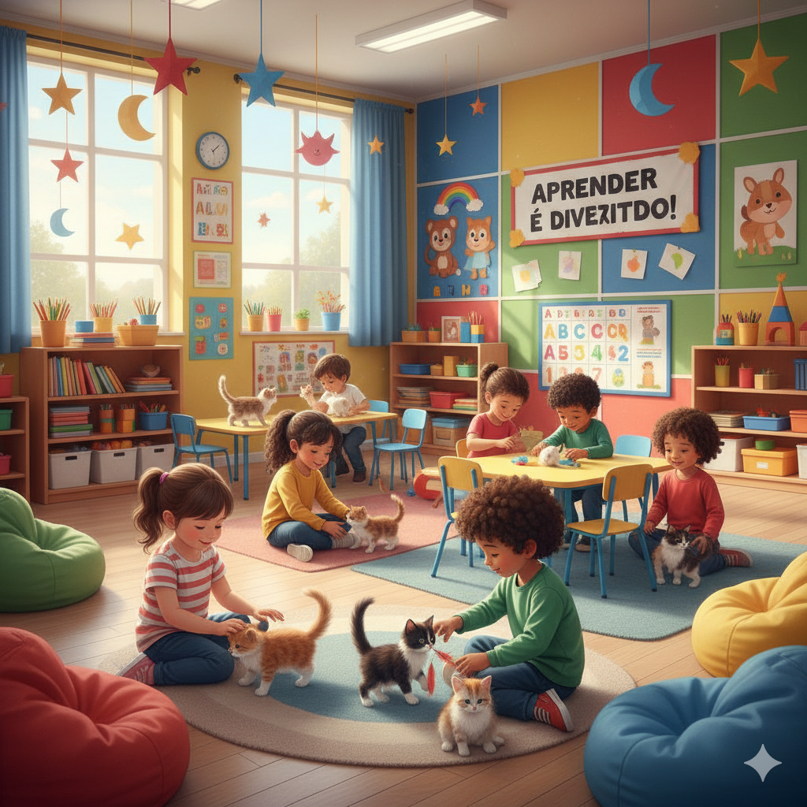
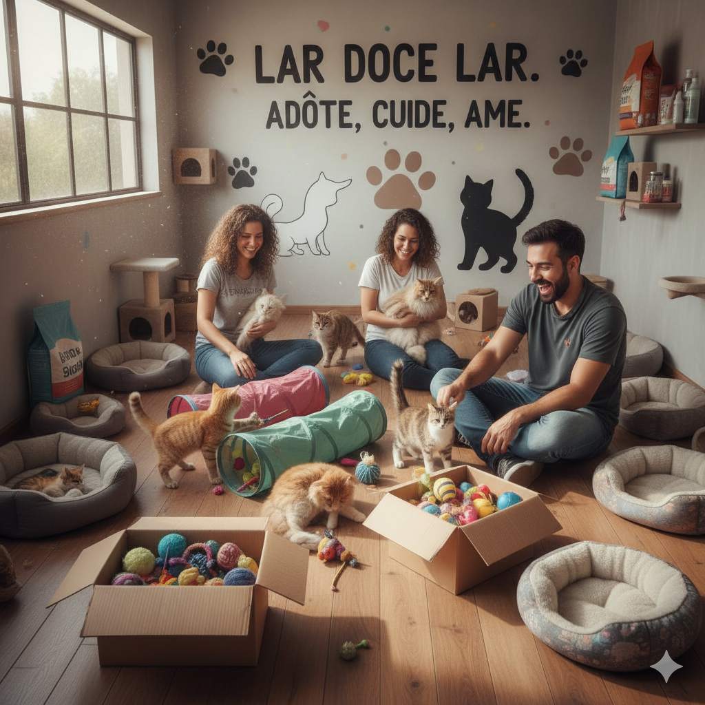

Projetos Sociais da MiauTividade
Na MiauTividade, acreditamos que pequenas ações podem fazer uma grande diferença na vida dos gatos. Conheça nossos projetos sociais e descubra como participar, voluntariando-se ou contribuindo com doações.
Gatinhos na Escola
O projeto promove palestras e atividades educativas em escolas públicas, incentivando crianças e jovens a se tornarem defensores do bem-estar animal desde cedo. Oficinas práticas incluem construção de casinhas e brinquedos para gatos.
Abrigo Temporário Solidário
Recebe gatos resgatados em situação de rua ou abandono, proporcionando um lar seguro enquanto aguardam adoção. Voluntários ajudam nos cuidados, socialização e alimentação dos felinos.
Voluntariado e Doações
Você pode fazer a diferença! A MiauTividade recebe voluntários para atividades como cuidado com gatos, organização de eventos educativos e ajuda na divulgação dos projetos.
Também aceitamos doações em dinheiro, ração, medicamentos e materiais de limpeza. Cada contribuição ajuda a transformar a vida dos felinos.
Para se voluntariar ou doar, entre em contato:
- E-mail: Contato@MiauTividade.com.br
- Telefone: (11) 94280-5484